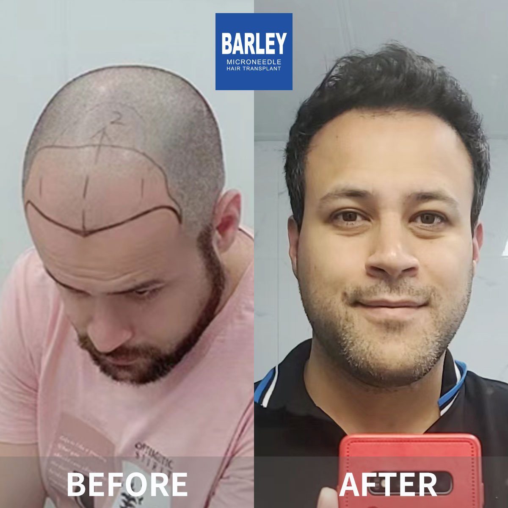

Understand your hair loss and find the right solution

Hair loss affects about 50% of men by age 50 and up to 80% by age 70. The good news is that with early intervention and proper treatment, you can effectively manage and even reverse hair loss. This comprehensive guide will help you understand the different types of hair loss, what causes it, and most importantly, what you can do about it.
Identify what type of hair loss you're experiencing
Classify your baldness severity
Understand why you're losing hair
Practical solutions for every stage
Take these steps to address your hair loss
Identify your stage using Norwood scale
Get expert evaluation and diagnosis
Begin medical therapy if appropriate
Explore surgical options if needed
Monitor progress and adjust as needed
Continue treatment to keep your gains
Industry leader with proven results
Pioneer and leader in microneedle hair transplant technology since 2006
Across major cities in China, all with the same high standards
Innovative microneedle and implant pen technology for superior results
Trusted by patients from around the globe for life-changing results
Full English support for international patients throughout treatment
State-of-the-art facilities and strict safety protocols for your peace of mind
See the amazing transformations our patients have achieved




Moments captured with our satisfied patients

Posing with our medical team after successful procedure

Celebrating fantastic results with our doctors

Another satisfied patient shares their joy

Patient with our specialist before discharge

Happy patient with Dr. Chen post-treatment

Excited patient showing their new look
Hear from our satisfied patients around the world
"I was so confused about male hair loss! This guide helped me understand everything and choose the right treatment! Now I'm getting great results!"
"I didn't know I had options beyond just transplant! The guide taught me about medical treatments too! I started early and saved my hair!"
"I researched on Google for months but was still confused! Barley's male hair loss guide explained everything so clearly! I made the right choice!"
"I didn't realize how early you should start treating male hair loss! The guide saved me from waiting too long! I got my hair back!"
"Understanding Norwood-Hamilton scale helped me see my pattern and choose treatment! The guide made everything so much clearer!"
"I felt so alone with my hair loss! The guide helped me understand it's common and there are solutions! I'm so much more confident now!"
Experience our modern and comfortable facilities

Our state-of-the-art facility

Relax in our premium lounge

Sterile and advanced

Private and professional

Comfortable post-op space

Welcoming entrance
Find answers to common questions about hair transplantation
Contact us for a free consultation
15810155700
+86 13730143529
hairtransplant@qq.com